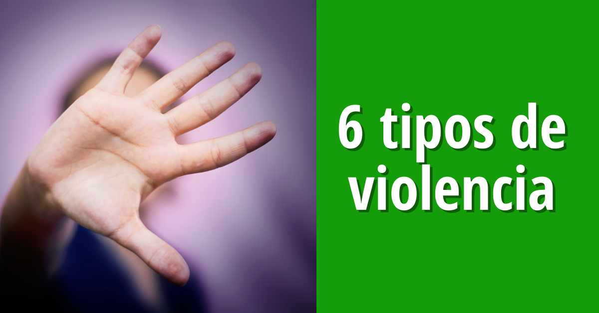

Objetivo de la Pagina
Hola, soy Loyda, una estudiante que estudia en Puerto Rico, proximamente estare cursando undecimo grado,
cuyo interes es el Arte y la Gastronomia.
Esta pagina web pudo ser creada gracias a SOWCODERS quien
me ayudaron a crear esta pagina web enseñandome el lenguaje HTML.
Esta pagina web tiene como objetivo
informar a las mujeres y niñas sobre el maltrato y la violencia de genero de una manera resumida. ¡¡Espero que les guste!!.
¿Que es el Maltrato?
Para empezar el maltrato se constituye de todo acto fisico, sexual,
emocional, economico o psicologico que influya sobre otra persona.
Esto incluye cualquier comportamiento que asuste, intimide, aterrorice,
manipule, dañe, humille, culpe, lesione o hiera a alguien.
El maltrato es algo que ocurre a nivel mundial,
esto no es solo a las personas tambien ocurre en los animales. En los hogares, en el trabajo, en la escuela y en el exterior
es donde se ve mayormente el maltrato o tambien llamado 'Bullyng'.
El maltrato es algo que puede hacer que las victimas
se sientan aisladas, temerosas y desconfiadas. Esto puede llevar a consecuensias psicologicas de por vida como
dificultades educativas, baja autoestima, depresion y problemas para formar y mantener relaciones.
Si sufres de maltrato siendo mujer o una niña notificalo a las autoridades, busca ayuda de algun amigo o de alguien en que confies.
Tipos de violencia
 La violencia y el maltrato es algo que, lamentablemente ocurre a nivel mundial,
no solo a las mujeres sino tambien a las niñas.
Los tipos de maltrato mas comunes entre las mujeres y niñas son:
- La violencia Psicologica-son actos que conllevan a la desvalorización y buscan disminuir o eliminar los recursos internos que la persona posee para hacer frente a las diferentes situaciones de su vida cotidiana
- La violencia Sexual- Es cuando alguien fuerza omanipula a otra persona a realizar una actividad sexual no deseada sin su consentimiento.
- La violencia Fisica- Es el uso intencional de fuerza o violencia contra otra persona, osea toda agresion contra el cuerpo de una persona.
- La violencia Economica- Es el poder que se ejerce contra las mujeres para hacerlas dependientes economicamente de los hombres; cuando se controla o limita sus ingresos economicos y la disposicion de los mismos.
- La violencia Emocional- Maltrato verbal en forma repetida, acoso, reclusion y/o reduccion y control por proximamente del agresor de los recursos fisicos, financieros y personales de la victima.
- La violencia Patrimonial- Es cualquier omision o acto que afecte la supervivencia de la victima como por ejemplo: daño a documentos personales, bienes o valores.
Lamentablemente en Puerto Rico es frecuente escuchar casos de feminicidio que es un tipo de himicidio especifico en el que un varon asesina a una mujer, chica o niña por ser de sexo femenino. Suelen ocurrir en el hogar como consecuensia de violencia de genero.
Señal de Socorro de violencia domestica
Se trata de una señal de auxilio internacional, un gesto que las mujeres pueden hacer con
mano para pedir ayuda cuando se sientan en peligro.
La Señal de ayuda fue creada por la Fundacion
de Mujeres canadienses y se presento el 14 de abril de 2020.
Este se creo en el confinamiento del covid-19,
cuando las victimas de violencia de genero se vieron obligadas a pasar mas tiempo con su maltratador, a lo que se
suma pedir ayuda a causa del aislamiento.
Pedir Ayuda
Si sufres de violencia de genero pide ayuda lo mas pronto posible.
Llama a emergencias y notificalo,
tambien otro metodo para pedir ayuda es usar la señal de socoro para que otra persona la vea y pueda pedir ayuda,
llama a un amigo familiar o a alguien en el que confies para que este te ayude de esa persona que te esta haciendo
daño.
No esperes a que sea demasiado tarde, busca ayuda rapidamente, denuncialo y reportalo.

Escribenos si tienens dudas
Gracias por su cooperacion